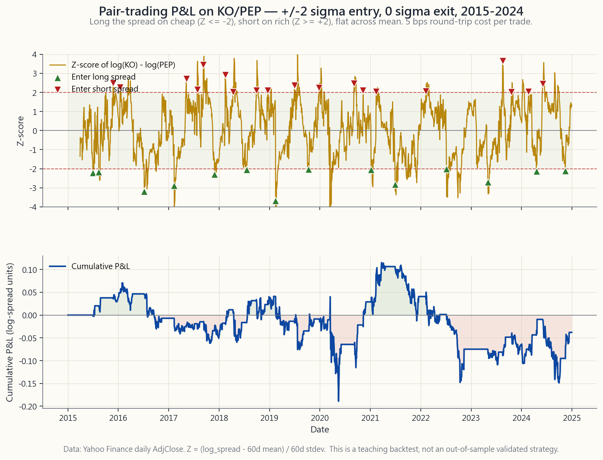

Week 14: Pair Trading — Relative Value, Mean Reversion, and the Simplest Equity-Hedge-Fund Strategy
1. Why This Is Important
Week 13 introduced long/short — the architecture. This week applies that architecture to its narrowest, most teachable form: **two stocks, one long, one short, equal dollar, sized to the spread between them.** Pair trading. The simplest equity-hedge-fund strategy in the book, and the cleanest place for a retail investor to learn the mechanics of relative value before scaling up to anything more complicated.
You need this lesson for four reasons.
learned.** Long Coke / short Pepsi at equal dollar is dollar- neutral by construction, roughly beta-neutral by virtue of the two stocks having near-identical sensitivities to the consumer- staples factor, and the entire P&L is the spread alpha — the difference between two close substitutes. There is nowhere for a directional view to hide. If the trade works, you traded the spread; if it doesn't, you didn't. Pair trading is the laboratory in which you find out whether you have any relative-value edge at all.
the made-up kind.** The structural alphas that actually compound after costs are liquidity, sector rotation, long-term trends, and buying what the passive machinery has abandoned. Pair trading sits inside the structural-alpha class because the pair trader is *supplying liquidity to the temporarily dislocated leg*. When PEP gaps down on a weak quarter and KO sits still, the pair trader who buys the dislocation is on the other side of forced sellers (mutual-fund redemptions, factor unwinds, index rebalances). The reversion of the spread back to its long-run relationship is the structural payment for that liquidity.
change problem.** Regime change is the recurring bell of this course: regimes change, often without warning, and a strategy that worked for a decade can stop working in a quarter. Pair trading is the cleanest case study of that principle in retail-accessible form. Two stocks that have moved together for fifteen years can permanently de-couple — KO and PEP did, partially, after PEP's snack-foods business compounded faster than KO's beverage-only one. A pair trade that ignored that fundamental divergence and kept fading the widening spread back to its 10-year mean would have been wrong for six straight years. **Cointegration is a conditional, regime-dependent property, not a permanent one.**
study for crowded factor risk.** When too many quants run essentially the same pair-trading and stat-arb strategies, the pairs themselves become a factor — a factor that can unwind in correlated panic. Over four trading days in August 2007, a forced unwind by one or two large multi-strat funds drove a simultaneous reversal across the standard pair-trading factor, and most of the field lost two-to-four sigma on what should have been independent trades. The lesson — your alpha is only alpha when the people running the same strategy aren't all forced to exit at the same time — is one of the most important risk- management lessons in modern finance, and pair trading is where it was first learned.
This lesson sits in the opportunistic slot of the four-tranche structure and on the alpha end of the barbell. Most of your wealth is in the safety end (cash, Treasuries, gold, deep-ITM long-dated calls on names you'd own anyway). A small sleeve at the alpha end is where the pair-trading book lives — the pinwheel, in Horace's phrase, that spins when the rest of the portfolio is sitting still.
2. What You Need to Know
2.1 Relative Value — the Core Reframe
Long-only investing asks an absolute question: "Is KO cheap?" The answer requires a view on KO's earnings, multiple, growth, balance sheet, and the broader equity-risk premium. Get any of those wrong and the trade can be wrong even if KO is "cheap" by your model.
Pair trading replaces the absolute question with a relative one: "Is KO cheap relative to PEP?" The two beverage incumbents share a customer base, a regulatory regime, an exposure to the commodity-price cycle in sugar and aluminium, an exposure to the consumer-staples factor, an exposure to USD strength, and roughly the same multiple regime. A bad consumer-staples macro hits both; a sugar-tax scare hits both; a strong-dollar quarter hits both. What it does not hit symmetrically is the company-specific operational variance — KO's bottler restructuring, PEP's snack-foods margin, an FX shock specific to one country, a recall that lands on one brand. The spread isolates that company-specific variance from everything else.
The directional risk you eliminate is large. The 60/40 holder of 2,000 shares of KO has roughly half a million dollars exposed to "the consumer staples factor wakes up tomorrow and falls 10% on a risk-off day." The dollar-neutral pair trader long 1,000 KO and short 1,000 PEP has approximately zero dollars exposed to that factor. What the pair trader has, instead, is a $0 net but $200 gross book that is exposed to **the difference between two stories that look similar**. That difference is what they get paid for — or punished for, when the difference turns out to be permanent rather than mean-reverting.
This is why pair trading is a clean teaching example: it strips off market beta entirely and lets you see, in isolation, whether the relative-value bet has any signal at all.
2.2 Spread Construction and the Z-Score
Once you've picked a pair, you need a way to say how dislocated it is. The standard approach is the **rolling-Z-score on the log-spread**.
Construct it in three steps.
s_t = log(P^A_t) - log(P^B_t).
Working in log-space is the convention because it makes the
spread invariant to dollar normalisation and gives a multiplicative
interpretation: a constant s_t means a constant ratio of
prices, regardless of level.
60 trading days is a common starting point for daily data.
Call them mu_t and sigma_t.
z_t = (s_t - mu_t) / sigma_t. By
construction, in a stable cointegrated relationship, z_t is
approximately distributed mean-zero, unit-variance, with most
observations falling between -2 and +2.
The image below shows what this looks like for KO and PEP from 2015 through 2024 — the top panel is normalised prices, the bottom panel is the rolling-60-day Z-score with +/-2 sigma bands.

A pair trader looks at the bottom panel and asks: *when the line hits +2, do I trust that it'll come back to zero, and how long will it take?* The answer comes from cointegration, not correlation.
2.3 Correlation vs Cointegration — Why the Distinction Matters
Two random walks can be highly correlated and still diverge to infinity. That is the trap that kills naive pair trades.
- Correlation measures whether two return series move together
- Cointegration is stronger. Two price series are cointegrated
In practice, cointegration is tested with the Engle-Granger two-step procedure or a Johansen test on level series; the details are second-order. The intuition is the part you must internalise: **you can trade pairs only when the spread is mean-reverting, and correlation alone does not guarantee that.** The textbook counter-example is two assets in different secular trends — both might rally together for years (high correlation) while the gap between them widens monotonically (no cointegration). A pair trader who fades that widening gap loses every quarter for a decade.
A practical rule: before you trade a pair, plot the spread Z-score over a 5-to-10-year window and ask "does this thing visibly come home, repeatedly, after each excursion?" If yes, the cointegration test is mostly confirming what your eye already saw. If no, no amount of statistical machinery will rescue the trade.
2.4 Classic Pairs and Why They Work
Four canonical retail-accessible US-listed pairs, with the structural reason each cointegrates:
| Pair | Sector | Why the spread mean-reverts |
|---|---|---|
| KO / PEP | Consumer staples — beverages | Two near-identical global beverage incumbents; same customer base, same commodity cost structure, same defensive multiple regime. Spread breaks only when one company makes a strategic-mix change (PEP's snack-foods build-out is the classic example). |
| V / MA | Financials — payments duopoly | Visa and Mastercard are a regulatory duopoly with identical economics: card interchange, network effects, oligopolistic pricing power. Spread breaks only on company-specific litigation or geographic-mix exposure (China, Russia). |
| XOM / CVX | Energy — integrated supermajors | Both run integrated upstream-downstream books with similar reserves, similar geography, similar capital-allocation discipline. Spread breaks on idiosyncratic operational events — refinery accidents, project-cost overruns. |
| GLD / SLV | Precious metals ETFs | Gold and silver share a monetary-debasement story, but silver is half industrial, half monetary; the spread (the "gold-silver ratio") cycles between 50 and 90 with cyclical mean-reversion driven by the relative weight of those two demand drivers. |
The common feature is that the two legs share a structural driver and differ on a contained idiosyncratic dimension. The trade is paid for the contained dimension (the spread mean-reverts) and protected against the structural one (it nets out).
2.5 Entry/Exit Rules and a Worked Backtest
The textbook rule is **+/-2 sigma entry, 0 sigma exit, with a hard stop at +/-3 to +/-4**.
- When
zfalls below -2: the spread is two standard deviations
- When
zrises above +2: the spread is two standard deviations
- When
zcrosses zero: the spread is back at its rolling mean.
- If
zcontinues past +/-3 or +/-4 in the wrong direction: **cut
The chart below shows that ruleset applied to KO/PEP from 2015 through 2024. The top panel is the Z-score with up-arrows on long- spread entries and down-arrows on short-spread entries; the bottom panel is the cumulative log-spread P&L net of a 5 bp round-trip cost per side change.
![Two-panel pair-trading backtest of KO/PEP from 2015 through 2024. Top panel: 60-day Z-score of log(KO)-log(PEP) with horizontal lines at +/-2 sigma and at zero, with green up-arrows marking entries to long the spread (Z hits -2) and red down-arrows marking entries to short the spread (Z hits +2). Bottom panel: the cumulative P&L line of the +/-2 entry, 0 exit rule with 5 bp per-trade costs, showing many small wins and one or two regime breaks where the spread did not mean-revert and the trade was cut.](image/week14_pair_pnl.png)
What the chart teaches: **most pair trades are small wins, with occasional regime breaks that cost more than several wins put together.** This is exactly the shape of a structural-alpha return stream. It is also why pair trading is run as a *book of many pairs* rather than one — the law of large numbers is what makes the small-edge-per-pair model viable. A single-pair retail implementation is more education than alpha; the production version diversifies across thirty to fifty pairs simultaneously.
2.6 The 2007 Quant Quake — Crowding Risk Is Real
In the first week of August 2007, the standard equity-stat-arb book — roughly defined as "long the cheap leg of a pair, short the rich leg, across many pairs simultaneously" — lost between 4 and 12 sigma of its expected daily return for four straight days. The unwind cascaded across most of the major multi-strat hedge funds running similar models: AQR, Renaissance Equity Market-Neutral, Goldman Global Equity Opportunities. Some funds halved in a week.
The post-mortem is now well-documented. One of the largest multi- strats — most of the public reconstruction blames Goldman's quant book, though the precise actor is less important than the mechanism — was forced to deleverage suddenly, likely due to a margin call originating from an unrelated subprime-mortgage book. Closing the equity book required selling its long stat-arb leg (buying back the short side) en masse. Because every other major quant ran the same pairs from the same factor data, those same pairs simultaneously moved adversely against everyone else's book. As losses mounted, more funds were forced to deleverage, which moved the pairs further, which forced more funds to deleverage. **Standard pair-trading factor exposure had become a crowded trade — and crowded trades, when they unwind, do so together.**
The lesson is foundational and is the cleanest illustration in finance of the regime-change principle. **An alpha source remains alpha only as long as the population running it is small enough that no forced exit can simultaneously move all the trades against you.** The day too many people run the same strategy, the strategy itself becomes the risk factor. This is why modern stat arb runs a continuous "crowdedness factor" overlay — measuring how many other funds are likely in the same trade — and dials gross exposure down as crowdedness rises. The retail pair trader inherits the same discipline in miniature: do not over-size a canonical, well-known pair, because every other dollar in that trade is implicitly correlated with yours.
2.7 Where Pair Trading Sits in the Barbell
The barbell is most of your wealth in safety, a small sleeve in genuine asymmetric edge. **Pair trading lives at the edge end.** Sized correctly, a pair-trading sleeve runs at single- digit percentage of total portfolio, in dollar-neutral pairs where the gross exposure is two-to-three times sleeve size and the net is approximately zero. The sleeve's expected contribution to total portfolio return is small (3-8% annualised on the sleeve, which translates to 0.3-0.8% on a 10% sleeve allocation); the expected contribution to total portfolio Sharpe is potentially much larger because the sleeve's returns are roughly orthogonal to the long-only book.
This is the right way to think about pair trading for a retail investor: **not as a way to compound wealth, but as a way to reduce the variance of the wealth path.** It is a Sharpe-ratio play, not a return play. Anyone who promises you a pair-trading strategy with double-digit gross returns and low drawdowns is either over-fitted, levered, or selling a course.
3. Common Misconceptions
Misconception 1: "High correlation means a good pair."
Correlation measures co-movement of returns; cointegration measures mean-reversion of levels. High correlation with no cointegration is the canonical wide-and-keep-widening trap.
**Misconception 2: "If a pair has worked for ten years, it'll keep working."**
KO/PEP's relationship has shifted twice in the last twenty years on PEP's snack-foods build. Cointegration is conditional on the underlying business mix staying stable. When the mix changes, the spread re-prices to a new equilibrium, and the trader fading the old equilibrium loses for years. The regime has shifted.
Misconception 3: "Z-score of +/-2 is a hard rule."
The thresholds are calibration choices, not laws. In a low-vol regime, +/-1.5 sigma fires more trades and may be the right cut; in a high-vol regime, +/-2.5 reduces false positives. Calibrate to the pair, the lookback, and the realised vol regime — not to the textbook number.
Misconception 4: "I'll just trade one pair to learn."
A single-pair book is not pair trading; it is one trade with high operational overhead. Real pair-trading strategies run thirty-plus pairs to make the law of large numbers work. The single-pair exercise is education; do not confuse it with alpha.
**Misconception 5: "Pair trading is risk-free because it's market- neutral."**
Pair trading has spread risk, regime-break risk, crowding risk (2007), borrow-cost risk on the short leg, and operational risk on margin and dividends. Net dollars zero is not net risk zero — LTCM was market-neutral and still lost 90%.
**Misconception 6: "If the spread keeps widening, my position gets bigger and the eventual reversion is more profitable."**
This is the martingale fallacy applied to pairs. As the spread widens, your mark-to-market loss grows, the broker raises your margin requirement, and the very mechanism that should make the trade more profitable in theory becomes the mechanism that forces you out before the reversion arrives. Stay solvent first — the market can stay irrational longer than you can — and that discipline is the anchor here.
Misconception 7: "Borrow cost is small enough to ignore."
For mega-cap pairs (KO, PEP, V, MA) it usually is — single-digit basis points. For smaller-cap or specialty pairs it isn't, and the borrow rate can flip from 1% to 30% on a press release. Always check the borrow on the short leg before sizing the trade.
Misconception 8: "The 2007 quant quake is ancient history."
The same mechanism repeats. February 2018 had a vol-target factor unwind. March 2020 had a multi-strat de-leveraging week. Every few years, factor crowding produces another four-day correlated unwind. The quake was the cleanest case study, not the only one.
**Misconception 9: "If I use options to express the pair, I avoid the borrow problem."**
You also avoid the linear-spread P&L. An options-based pair has non-linear exposure to volatility and a defined-cost premium that eats into the spread alpha. It is not a free upgrade — it is a different trade with different greeks.
Misconception 10: "Pair trading is alpha, full stop."
Pair trading is alpha *as long as the spread cointegrates and the strategy isn't crowded*. Both conditions can fail. It is structural alpha conditional on regime and crowding — not a permanent free lunch.
**Misconception 11: "The strategy works because I picked the right pair."**
The strategy works because many pairs simultaneously revert slightly, and the small per-pair edge aggregates into a usable return stream at the book level. Single-pair returns are mostly noise; book-level returns are where the alpha is recognisable.
4. Q&A
**Q1: Should a retail investor with a $100k portfolio actually run a pair-trading book?**
A: Probably not as a serious P&L source. The minimum scale for a pair-trading book to be statistically meaningful is twenty-to- thirty pairs simultaneously, with operational discipline on borrow, margin, and dividends. Below that scale, you have a high-overhead toy. *Run one or two pairs in small size for education* — a few percent of your portfolio — and treat the output as tuition. If you want the alpha without the overhead, buy a market-neutral mutual fund or ETF and let someone else run the book.
Q2: What lookback window should I use for the Z-score?
A: 60 trading days is a sensible starting point for daily data; 40 is more responsive but noisier; 120 is more stable but slower to detect regime breaks. The right answer is a function of how fast the cointegration of your specific pair tends to reset. For mega-cap pairs (KO/PEP), 60 to 90 days. For more volatile pairs (small-cap, biotech), 30 to 60. Calibrate, do not adopt by default.
Q3: How big a position can I take in one pair?
A: A common institutional rule is 2-5% of the sleeve per pair, with a hard 10% cap. For a retail investor, on a $100k portfolio with a $10k pair-trading sleeve, that's $200-500 of gross exposure per pair (i.e., $200 long + $200 short = $400 gross at the small end). It feels small. It is small. Pair trading is a per-pair-tiny, many-pair-aggregated strategy by design.
Q4: When do I cut a pair and admit the cointegration broke?
A: When z extends past +/-3 to +/-4 and shows no signs of
returning, and you can identify a fundamental reason for the
break — a strategic-mix change in one of the companies, a
regulatory event that hits one and not the other, a takeover.
A spread that goes to -3.5 with no fundamental story is more
likely to revert than one that goes to -2.5 with a clear
story. Trade the fundamental, not just the Z-score.
Q5: How does pair trading interact with taxes?
A: Poorly, in a US taxable account. Pair trades have short holding periods on average (weeks to a few months), so realised gains are short-term — taxed at ordinary income rates, not long-term capital. The tax drag on a pair-trading book is one of the largest hidden costs. This is one reason institutional pair traders run inside tax-deferred wrappers (pension money, insurance separate accounts) where the structural tax disadvantage is absent.
Q6: How do dividends work for the short leg?
A: You owe them. If you are short PEP across the ex-dividend date, the dividend is debited from your account on pay-date and credited to the lender. There is no offset. For dividend-rich pairs (utilities, REITs), this is a meaningful drag and must be included in the per-trade cost calculation.
**Q7: What's the difference between pair trading and statistical arbitrage?**
A: Stat arb is pair trading scaled up: the same Z-score logic, but applied across hundreds-to-thousands of pairs simultaneously, with multi-factor decomposition (sector neutralisation, factor neutralisation), with optimised execution (VWAP/TWAP, dark pools), and held for shorter horizons (intraday to a few days). Pair trading is the educational unit; stat arb is the production implementation.
Q8: Why did the 2007 quant quake hit specifically pair traders?
A: Because the universe of "pairs" identified by a standard cointegration screen is largely the same across funds — the same sector pairs, the same factor neutralisations, the same optimisation. When one large player has to liquidate, they unwind the same trades that everyone else is on. Diversification in trade count does not help when the trades themselves are factor- correlated.
Q9: Can I use options instead of stock for the short leg?
A: Yes, and for retail it's often cleaner — buy a put on the expensive leg instead of shorting the stock. You avoid borrow, locate, and dividend obligations. You pick up theta decay and a volatility-dependent premium, and the linear-spread P&L is distorted into something more option-like. For a small retail sleeve where operational simplicity dominates, options-based pairs are a reasonable choice. The barbell logic naturally points here.
Q10: How does pair trading fit with the four tranches?
A: Pair trading is opportunistic — it sits in the third tranche alongside specific structural-alpha trades. It is not bedrock (too volatile, too operationally demanding), not core (it doesn't target a long-run risk premium), and not asymmetric speculation (no convex payoff). It earns its place by being roughly orthogonal to the rest of the portfolio.
Q11: What does a typical pair-trading sleeve P&L look like?
A: Many small wins (50-150 bps each on the gross), occasional regime breaks that cost 200-500 bps, and a flat-line during periods of compressed cross-sectional vol. Annualised return on the sleeve is typically in the 4-8% range gross, with realised vol of 5-10%. After fees and taxes for retail, considerably less. The chart shape is "many small steps up, occasional cliffs down," and the Sharpe ratio is the metric that matters — not the absolute return.
Q12: What should I read next if I want to actually build this?
A: Three things. (a) The original Gatev-Goetzmann-Rouwenhorst paper (2006) on pair trading — the academic baseline. (b) Khandani-Lo (2007), the post-mortem on the August 2007 quant quake. (c) The chapters in Lopez de Prado's *Advances in Financial Machine Learning* on cointegration and triple-barrier labelling. Read in that order — academic foundation, the war story, then the modern toolkit.
第14週：配對交易——相對價值、均值回歸，以及最簡單的股票對沖基金策略
1. 為何此課題至關重要
第13週介紹了長短倉的架構。本週將把該架構應用於其最精簡、最易於講解的形式：兩隻股票，一長一短，等額美元，按兩者之間的差價定位。 配對交易。這是業內最簡單的股票對沖基金策略，也是散戶投資者在進階至更複雜策略之前，學習相對價值操作機制最清晰的切入點。
你需要學習這課的原因有四個。
本課在四分倉結構的機會性倉位中，也在啞鈴組合的阿爾法一端。你的大部分財富在安全端（現金、國債、黃金、你本來也願意持有的標的之深度價內長期認購期權）。阿爾法端的小型配置，就是配對交易賬本所在之處——用陳馬的說法，是一個「風車」，在投資組合其餘部分靜止時轉動。
2. 你需要掌握的內容
2.1 相對價值——核心思維轉換
做多方向的投資提出的是一個絕對問題：「可口可樂是否便宜？」這個問題的答案，需要對可口可樂的盈利、估值倍數、增長、資產負債表以及更廣泛的股票風險溢價有所看法。其中任何一個判斷出錯，即使可口可樂在你的模型中「便宜」，交易也可能虧損。
配對交易把絕對問題替換為相對問題：「可口可樂相對於百事可樂是否便宜？」 這兩家飲料巨頭共享同一客戶群、同一監管制度、同一對糖和鋁的商品價格周期敞口、同一消費必需品因子敞口、同一對美元強勢的敞口，以及大致相同的估值倍數制度。消費必需品宏觀環境不佳，兩者同受影響；含糖飲料稅恐慌，兩者同受影響；強美元季度，兩者同受影響。然而，非對稱影響兩者的，是各公司特有的業務差異——可口可樂的裝瓶商重組、百事的零食業務利潤率、對某一特定國家造成衝擊的匯率波動、只落在某一品牌上的召回事件。差價把公司特有的差異，從其他一切因素中剝離出來。
你所消除的方向性風險非常巨大。持有2,000股可口可樂的六四組合投資者，大約有五十萬美元暴露於「若消費必需品因子明天因避險情緒下跌10%」的風險。美元中性配對交易者做多1,000股可口可樂、做空1,000股百事可樂，對該因子的敞口約為零。配對交易者所持有的，是淨值為零但總值約20萬美元的賬本，暴露於兩個看似相近的故事之間的差異。這個差異，就是他們所獲得的回報——或者，當差異被證明是永久性而非均值回歸性時，所承受的懲罰。
這就是配對交易作為清晰教學範例的原因：它完全剔除了市場貝塔，讓你在孤立的環境下，看清相對價值押注究竟是否存在任何信號。
2.2 差價構建與Z值
選定配對後，你需要一種方法來衡量其錯位程度。標準方法是對數差價的滾動Z值。
分三步建構：
s_t = log(P^A_t) - log(P^B_t)。以對數空間計算是慣例，因為它使差價不受美元標準化影響，並具有乘法詮釋：常數的 s_t 代表恆定的價格比率，而與絕對水平無關。mu_t 和 sigma_t。z_t = (s_t - mu_t) / sigma_t。在穩定的協整關係中，z_t 的分佈近似均值為零、單位方差，大多數觀測值落在-2至+2之間。下圖顯示的是2015年至2024年可口可樂與百事可樂的情況——上方面板為標準化價格，下方面板為滾動60日Z值，並附有+/-2倍標準差帶狀區。
配對交易者注視下方面板，並提問：當該線觸及+2時，我是否相信它會回歸至零，以及需要多長時間？ 答案來自協整，而非相關性。
2.3 相關性與協整——為何此區別至關重要
兩個隨機遊走序列可能具有高度相關性，卻仍會分歧至無窮大。這正是殺死幼稚配對交易的陷阱。
- 相關性衡量兩個收益率序列是否在短期內一同波動。兩隻股票的月度相關性為0.85，僅表示它們的月度收益率方向一致；這對其水平差價是否均值回歸毫無指示意義。
- 協整更為嚴格。兩個價格序列若協整，意味著存在一個令其成為平穩序列的線性組合——即差價本身具有穩定的均值與方差，並在偏離後回歸。協整是「兩者共享一個長期均衡關係」的數學形式化表達。
一個實用法則：在交易配對之前，繪製5至10年窗口的差價Z值，並捫心自問：「這個東西每次偏離後，是否都明顯地回歸？」若是，協整測試在很大程度上只是確認你的眼睛所見。若否，任何統計工具都無法拯救這筆交易。
2.4 經典配對及其奏效原因
四組具典範意義、散戶可操作的美股上市配對，以及各配對差價均值回歸的結構性原因：
| 配對 | 板塊 | 為何差價均值回歸 |
|---|---|---|
| KO / PEP | 消費必需品——飲料 | 兩家業務幾乎相同的全球飲料巨頭；相同客戶群、相同商品成本結構、相同防禦性估值倍數制度。差價僅在其中一家公司進行策略性業務組合調整時才會突破（百事可樂的零食業務擴張是經典例子）。 |
| V / MA | 金融——支付雙寡頭 | Visa與Mastercard是擁有相同經濟特性的監管雙寡頭：卡片交換費、網絡效應、寡頭定價權。差價僅在公司特有訴訟或地區業務組合敞口（中國、俄羅斯）上出現突破。 |
| XOM / CVX | 能源——綜合超級石油公司 | 兩者均擁有類似儲量、地理分佈及資本分配紀律的上下游綜合業務。差價在特有運營事件——煉油廠意外、項目成本超支——時出現突破。 |
| GLD / SLV | 貴金屬交易所買賣基金 | 黃金與白銀共享貨幣貶值的敘事，但白銀一半工業、一半貨幣屬性；差價（「金銀比率」）在50至90之間循環，均值回歸由兩種需求驅動因素的相對比重所驅動。 |
共同特點是兩隻腳共享一個結構性驅動因素，在一個有限的個別維度上存在差異。交易者因這個有限維度而獲得回報（差價均值回歸），並免受結構性驅動因素影響（兩者相互抵消）。
2.5 進出場規則與實際回測
教科書規則是+/-2倍標準差進場，0倍標準差出場，並設+/-3至+/-4的硬止蝕。
- 當
z低於-2時：差價相對便宜兩個標準差，A相對B異常便宜。以等額美元做多A、做空B。 - 當
z高於+2時：差價相對昂貴兩個標準差。做空A、做多B，以等額美元計。 - 當
z穿越零時：差價已回到滾動均值。出場。不要等待相反的尾端；再多持有一個標準差的邊際預期回報微小，而制度轉變風險則隨持倉時間增長。 - 若
z繼續以錯誤方向超越+/-3或+/-4：斬倉並重新評估協整假設——更多時候，這意味著關係已出現結構性突破，而非隨機性錯位。

圖表的教訓：大多數配對交易是小額獲利，但偶發的制度突破所帶來的損失，超過多次獲利的總和。 這正是結構性阿爾法回報流的形態。這也是配對交易以多個配對組成的賬本而非單一配對來運作的原因——大數定律才是令每個配對邊際優勢較低的模型得以可行的關鍵。散戶的單一配對操作更多是教育意義而非阿爾法；在實際生產層面，需同時分散至三十至五十個配對。
2.6 2007年量化基金震盪——擁擠風險是真實存在的
2007年8月第一週，標準股票統計套利賬本——大致定義為「在許多配對中，同時做多便宜腳、做空昂貴腳」——連續四個交易日損失了預期每日回報的4至12個標準差。這場平倉在運行類似模型的主要多策略對沖基金中蔓延：AQR、文藝復興股票市場中性基金、高盛全球股票機會基金。部分基金在一週內損失過半。
事後分析現已有充分記錄。其中一家最大的多策略基金——大多數公開重建指向高盛的量化賬本，儘管具體主角不如機制重要——被迫突然去槓桿，很可能是由無關的次按抵押貸款賬本觸發的追繳保證金所致。平倉股票賬本需要大規模賣出其統計套利的多頭倉（同時買回空頭倉）。由於所有其他主要量化基金都以相同因子數據運行著相同的配對，這些配對同時對所有其他人的賬本造成不利影響。隨著損失加劇，更多基金被迫去槓桿，令配對進一步移動，再迫使更多基金去槓桿。標準配對交易因子敞口已成為一筆擁擠的交易——而擁擠的交易一旦平倉，就會集體發生。
這一教訓是根本性的，也是制度轉變原則在金融領域最清晰的說明。一個阿爾法來源，只有在運行它的群體規模足夠小，以致任何被迫退場都無法同時令你所有交易逆向移動時，才能持續是阿爾法。 一旦太多人運行同一策略，策略本身就變成了風險因子。這正是現代統計套利運行持續「擁擠度因子」疊加層的原因——衡量有多少其他基金可能持有相同交易——並在擁擠度上升時降低總敞口。散戶配對交易者繼承了同樣的紀律，以微型形式呈現：不要過度持倉於一個廣為人知的標準配對，因為該交易中的每一分錢，都在隱性上與你的倉位相關聯。
2.7 配對交易在啞鈴組合中的定位
啞鈴組合是將你的大部分財富置於安全端，小型配置則用於真正的不對稱優勢。配對交易屬於優勢端。 若大小適當，配對交易配置的佔比為總投資組合的個位數百分比，在美元中性配對中，總敞口為配置規模的兩至三倍，淨值則約為零。該配置對總投資組合回報的預期貢獻較小（配置本身年化3-8%，若配置佔10%則換算為總投資組合的0.3-0.8%）；但對總投資組合夏普比率的潛在貢獻則可能大得多，因為該配置的回報與純多頭賬本大致正交。
對散戶投資者而言，這才是思考配對交易的正確方式：並非作為複利財富的途徑，而是作為降低財富路徑波動性的工具。 這是一個夏普比率的博弈，而非回報的博弈。任何人承諾你配對交易策略能帶來雙位數總回報且回撤低，不是過度回測，就是加了槓桿，就是在賣課程。
3. 常見誤解
誤解一：「高相關性代表良好的配對。」
相關性衡量收益率的共同移動；協整衡量水平值的均值回歸。高相關性但無協整，就是經典的差價持續擴大的陷阱。
誤解二：「若一個配對在過去十年有效，它就會繼續有效。」
可口可樂/百事可樂的關係，在過去二十年因百事的零食業務擴張而兩度轉變。協整取決於標的公司的業務組合保持穩定。業務組合改變時，差價會重新定價至新的均衡水平，而逆勢押注舊均衡的交易者，會連續虧損數年。制度已轉變。
誤解三：「+/-2倍Z值標準差是一條硬性規則。」
這些閾值是校準選擇，而非定律。在低波動性制度下，+/-1.5倍標準差觸發更多交易，可能是正確的截斷點；在高波動性制度下，+/-2.5倍可減少假信號。應根據配對、回望窗口和實際波動性制度進行校準——而非照搬教科書數字。
誤解四：「我只交易一個配對來學習。」
單一配對賬本並非配對交易；它只是一筆操作開支高昂的交易。真正的配對交易策略同時運行三十個以上的配對，以使大數定律發揮作用。單一配對練習是教育；切勿將其與阿爾法混淆。
誤解五：「配對交易因市場中性而沒有風險。」
配對交易存在差價風險、制度突破風險、擁擠風險（2007年）、空頭倉位的借券成本風險，以及保證金和股息的操作風險。淨值美元為零，並不等於淨值風險為零——長期資本管理公司是市場中性的，卻仍損失了90%。
誤解六：「若差價持續擴大，我的倉位就更大，最終的回歸利潤就更豐厚。」
這是馬丁格爾謬誤應用於配對上。隨著差價擴大，你的按市值計算損失增加，經紀提高你的保證金要求，而在理論上應令交易更有利可圖的機制，在實際上成了在回歸到來之前迫使你出局的機制。先保持償付能力——市場保持非理性的時間可能超過你所能承受的——而這一紀律就是此處的錨點。
誤解七：「借券成本小到可以忽略。」
對於超大型配對（可口可樂、百事可樂、Visa、萬事達卡）而言，通常如此——僅數個基點。對於較小市值或專門配對，則不然，借券利率可能因一則新聞稿而從1%跳升至30%。在確定交易大小前，務必核實空頭腳的借券情況。
誤解八：「2007年量化基金震盪是遠古歷史。」
同樣的機制一再重演。2018年2月出現了波動性目標因子的平倉。2020年3月出現了多策略基金的去槓桿週。每隔幾年，因子擁擠就會引發另一次為期四天的關聯性平倉。這場震盪是最清晰的案例研究，而非唯一一次。
誤解九：「若使用期權來表達配對，就能避免借券問題。」
你同樣放棄了線性差價損益。基於期權的配對，對波動性具有非線性敞口，且定額的期權金會侵蝕差價阿爾法。這並非免費升級——而是一筆具有不同希臘值的不同交易。
誤解十：「配對交易就是阿爾法，句號。」
配對交易是在差價協整且策略不擁擠的前提下的阿爾法。兩個條件都可能失效。它是視制度和擁擠度而定的結構性阿爾法——並非永久的免費午餐。
誤解十一：「策略奏效是因為我選對了配對。」
策略奏效是因為許多配對同時輕微回歸，而微小的每配對優勢在賬本層面累積成可用的回報流。單一配對的回報大多是噪音；賬本層面的回報才是阿爾法可辨認之處。
4. 問答
問1：擁有10萬美元投資組合的散戶投資者，實際上應該運行一個配對交易賬本嗎？
答：作為認真的損益來源，可能並不應該。一個配對交易賬本要在統計上有意義，最低規模是同時持有二十至三十個配對，並在借券、保證金和股息上保持嚴格的操作紀律。低於這個規模，你擁有的只是一個高開支的玩具。以小額倉位進行一兩個配對的交易以作學習——佔投資組合的幾個百分點——並把結果視為學費。若你想要阿爾法但不想承擔操作開支，買一隻市場中性互惠基金或交易所買賣基金，讓別人去管理賬本。
問2：Z值應使用哪個回望窗口？
答：60個交易日是日線數據的合理起點；40個交易日反應更快但噪音更多；120個交易日更穩定但對制度突破的偵測較慢。正確答案取決於你特定配對的協整往往多快重置。對於超大型配對（可口可樂/百事可樂），60至90天。對於波動性較高的配對（細價股、生物科技），30至60天。進行校準，不要盲目沿用預設值。
問3：在一個配對上可以持有多大的倉位？
答：機構常見規則是每個配對佔配置的2-5%，硬性上限為10%。對於散戶投資者，在10萬美元投資組合、1萬美元配對交易配置的情況下，每個配對的總敞口為200至500美元（即最小端為200美元多倉+200美元空倉=400美元總值）。感覺很小。的確很小。配對交易在設計上，就是每個配對規模微小、通過多個配對聚合的策略。
問4：何時應斬倉一個配對並承認協整已打破？
答：當 z 延伸超過+/-3至+/-4且沒有回歸跡象，並且你能找到一個突破的基本面理由——其中一家公司的業務組合出現策略性轉變、影響其中一方而非另一方的監管事件、收購要約。在沒有基本面故事的情況下，差價跌至-3.5，比在有明確故事支撐下跌至-2.5，更可能出現回歸。交易基本面，而不僅僅是Z值。
問5：配對交易如何與稅務互動？
答：在美國應稅賬戶中，效果不佳。配對交易的平均持倉期較短（數週至數月），因此已實現盈利屬短期性質——按普通收入稅率課稅，而非長期資本增值稅率。配對交易賬本的稅務拖累是最大的隱性成本之一。這是機構配對交易者在免稅賬戶（退休金資金、保險獨立賬戶）內操作的原因之一，在這些賬戶中，結構性稅務劣勢並不存在。
問6：股息如何處理空頭倉位？
答：你需要支付。若你在除息日持有百事可樂的空倉，股息將在付款日從你的賬戶中扣除，並貸記給出借方。沒有抵銷機制。對於股息豐厚的配對（公用事業、房地產信託基金），這是一項重大拖累，必須計入每筆交易的成本計算中。
問7：配對交易與統計套利有何區別？
答：統計套利是配對交易的規模化版本：相同的Z值邏輯，但同時應用於數百至數千個配對，配以多因子分解（板塊中性化、因子中性化）、優化執行（成交量加權平均價格/時間加權平均價格、暗盤），並以更短的持倉期持有（日內至數天）。配對交易是教育單位；統計套利是實際生產層面的實施。
問8：為何2007年量化基金震盪專門打擊了配對交易者？
答：因為標準協整篩選所識別的「配對」宇宙，在各基金之間幾乎相同——相同的板塊配對、相同的因子中性化、相同的優化。當一家大型基金需要清盤時，他們平倉的正是所有人都持有的相同交易。交易數目的分散化並無幫助，因為交易本身在因子層面是相關聯的。
問9：我可以用期權代替股票來做空頭腳嗎？
答：可以，對散戶而言這通常更便捷——買入昂貴腳的認沽期權，而非做空股票。你避免了借券、定位和股息義務。你承擔了時間值損耗和依賴波動性的期權金，線性差價損益被扭曲為更類似期權的形態。對於操作簡便性優先於一切的小型散戶配置而言，基於期權的配對是一個合理的選擇。啞鈴組合的邏輯自然指向這裡。
問10：配對交易如何與四分倉結構配合？
答：配對交易屬於機會性——它位於第三分倉，與特定結構性阿爾法交易並列。它不屬於基石（波動性太高、操作要求太苛刻）、核心（不以長期風險溢價為目標）或不對稱投機（無凸性回報）。它之所以佔有一席之地，在於其回報與投資組合其餘部分大致正交。
問11：典型的配對交易配置損益是什麼樣子？
答：許多小額獲利（每次換倉總值的50-150個基點），偶發的制度突破損失（200-500個基點），以及截面波動性受壓期間的橫向整理。配置的年化回報通常在扣除費用前的4-8%範圍內，已實現波動性為5-10%。扣除費用及散戶稅務後，將大幅減少。圖表形態是「許多小步上升，偶發的斷崖式下跌」，而夏普比率才是重要的指標——而非絕對回報。
問12：若我想真正建立這個策略，下一步應該讀什麼？
答：三件事。（a）Gatev-Goetzmann-Rouwenhorst（2006年）關於配對交易的原始論文——學術基準。（b）Khandani-Lo（2007年），2007年8月量化基金震盪的事後分析。（c）Lopez de Prado所著《金融機器學習進階》中關於協整和三重屏障標記的章節。按此順序閱讀——學術基礎、戰爭故事，然後是現代工具箱。
第14週：配對交易——相對價值、均值回歸，以及最簡單的股票避險基金策略
1. 為什麼這很重要
第13週介紹了多空策略的架構。本週將把這個架構應用於其最精簡、最易教學的形式：兩檔股票，一多一空，等額美元，依兩者之間的價差進行規模調整。 配對交易。這是業界最簡單的股票避險基金策略，也是散戶投資人在進階到更複雜操作之前，學習相對價值機制最清晰的起點。
你需要學這堂課，有四個原因。
這堂課在四分倉結構中位於機會性槽位，並處於槓鈴的阿爾法端。你的大部分財富在安全端（現金、國庫券、黃金、你本就願意持有標的的深度價內長期選擇權）。槓鈴阿爾法端的一小部分配置，就是配對交易部位的所在——用陳馬的話說，就是在投資組合其餘部分靜止不動時旋轉的風車。
2. 你需要知道的事
2.1 相對價值——核心思維重構
多頭投資問的是絕對問題：「可口可樂便宜嗎？」回答這個問題，需要對可口可樂的盈餘、本益比倍數、成長前景、資產負債表，以及更廣泛的股票風險溢酬有所判斷。任何一個判斷錯誤，即使可口可樂在你的模型中是「便宜的」，交易仍可能虧損。
配對交易將絕對問題替換為相對問題：「可口可樂相對百事可樂便宜嗎？」 這兩家飲料龍頭共享同一客戶群、相同的監管環境、對糖和鋁等原物料價格週期的相同曝險、對消費必需品因子的相同曝險，以及對美元強勢的相同曝險，還有大致相同的本益比倍數環境。消費必需品總體環境惡化，兩者都受影響；糖稅恐慌，兩者都受影響；強勢美元的單季影響，兩者都受影響。然而，公司特有的營運差異，卻不會對兩者產生對稱的衝擊——可口可樂的裝瓶商重組、百事可樂零食部門的利潤率、特定國家的匯率衝擊，或只落在某個品牌上的召回事件。這個價差，將公司特有的差異，從其他所有因素中剝離出來。
你所消除的方向性風險非常大。持有2,000股可口可樂的60/40投資者，約有五十萬美元曝險於「消費必需品因子明天在避險情緒下跌10%」的情境。而等額美元做多1,000股可口可樂、放空1,000股百事可樂的配對交易者，對那個因子的曝險幾乎是零。配對交易者持有的，是淨值為零但總部位約兩萬美元的帳簿，曝險於兩個看似相似故事之間的差異。那個差異，是他們獲得報酬的來源——或者，當差異被證明是永久性而非均值回歸時，是受到懲罰的來源。
這就是配對交易成為清晰教學範例的原因：它完全剝除了市場貝塔，讓你能夠單獨檢視相對價值操作是否真的具有任何訊號。
2.2 價差建構與Z分數
一旦選定配對，你需要一種方式來衡量錯置程度。標準方法是對數價差的滾動Z分數。
分三步驟建構。
s_t = log(P^A_t) - log(P^B_t)。使用對數空間是慣例，因為它使價差對美元正規化不變，並提供乘法解釋：恆定的 s_t 意味著價格的恆定比率，與價格水準無關。mu_t 和 sigma_t。z_t = (s_t - mu_t) / sigma_t。在穩定的共整合關係中，z_t 的分布近似均值為零、單位變異數，大多數觀測值落在-2至+2之間。下圖展示了2015年至2024年間可口可樂與百事可樂的對照情況——上半部分是正規化後的價格，下半部分是60日滾動Z分數，標有+/-2個標準差的區間。
配對交易者看著下面那個面板思考：當這條線觸及+2時，我相信它會回到零嗎？這需要多長時間？ 答案來自共整合，而非相關性。
2.3 相關性vs.共整合——為何差異如此重要
兩個隨機漫步可以高度相關，卻仍然向無限大背離。這就是殺死天真配對交易的陷阱。
- 相關性衡量兩個報酬序列在短期內是否同向運動。兩檔股票的月相關性為0.85，只是說明它們的月度報酬方向一致；這對於兩者價位之間的價差是否均值回歸，毫無任何保證。
- 共整合更強。兩個價格序列若存在一個使其成為定態的線性組合，則稱為共整合——即價差本身具有穩定均值和變異數，並在偏離後回歸。共整合是「它們共享長期均衡關係」的數學形式化。
實用準則：在交易任何配對之前，繪製5到10年窗口的價差Z分數圖，然後問自己：「每次偏離之後，這個東西是否真的多次回到均值？」如果是，共整合測試不過是在確認你的眼睛已經看到的東西。如果不是，再多的統計工具也無法拯救這筆交易。
2.4 經典配對及其運作原因
四個散戶可及的美國上市典型配對，以及每個配對共整合的結構性原因：
| 配對 | 類股 | 價差均值回歸的原因 |
|---|---|---|
| 可口可樂 / 百事可樂 | 消費必需品——飲料 | 兩家幾乎相同的全球飲料龍頭；相同的客戶群、相同的原物料成本結構、相同的防禦性本益比倍數環境。只有當其中一家公司改變策略組合時，價差才會突破（百事可樂拓展零食業務是經典例子）。 |
| Visa / Mastercard | 金融——支付雙頭壟斷 | Visa和Mastercard是監管雙頭壟斷，擁有相同的經濟模式：卡片手續費、網路效應、寡頭定價能力。只有在公司特有的訴訟或地理組合曝險（中國、俄羅斯）時，價差才會突破。 |
| 埃克森美孚 / 雪佛龍 | 能源——綜合超級石油公司 | 兩者均運營整合上下游業務，儲量相似、地理位置相似、資本配置紀律相似。只有在特有的營運事件（煉油廠事故、項目成本超支）時，價差才會突破。 |
| GLD / SLV | 貴金屬指數股票型基金 | 黃金和白銀共享貨幣貶值的故事，但白銀一半是工業用途、一半是貨幣用途；價差（「金銀比」）在50至90之間循環，均值回歸由這兩種需求驅動因素的相對權重主導。 |
共同特徵是兩腳共享一個結構性驅動因素，且在一個有限的特有維度上存在差異。交易者因有限維度而獲得報酬（價差均值回歸），並受到結構性維度的保護（相互抵消）。
2.5 進出場規則與一個實際回測
教科書規則是+/-2個標準差進場，0個標準差出場，並設有+/-3至+/-4的硬停損。
- 當
z跌破-2：價差便宜了兩個標準差，A相對B異常便宜。等額美元做多A、放空B。 - 當
z升破+2：價差貴了兩個標準差。放空A、做多B，等額美元。 - 當
z穿越零：價差回到滾動均值。出場。不要等到對面的尾端；再撐一個標準差的邊際預期報酬很小，而政策環境轉變的風險隨持有期增加而增長。 - 如果
z繼續向錯誤方向超過+/-3或+/-4：砍倉，重新評估共整合假設——這種情況下，關係發生了結構性突破的可能性，遠大於隨機錯置的可能性。
這張圖所傳授的：大多數配對交易是小勝，偶爾的政策環境突破所造成的損失，超過好幾筆小勝的總和。 這正是結構性阿爾法報酬流的形態。這也是配對交易以多個配對組成的帳簿運行，而非僅有一對的原因——大數法則是使每配對微薄優勢模式可行的關鍵。單一配對的散戶操作，更多是教育意義而非阿爾法；生產版本同時分散於三十到五十個配對之中。
2.6 2007年量化地震——擁擠風險是真實存在的
2007年8月的第一週，標準股票統計套利帳簿——大致定義為「在多個配對中同時做多便宜腳、放空貴腳」——在連續四個交易日內，損失了其預期日報酬的四到十二個標準差。這次平倉潮席捲了大多數主要多策略避險基金，這些基金運行著類似的模型：AQR、文藝復興股票市場中性基金、高盛全球股票機會基金。部分基金在一週內規模腰斬。
這次事後覆盤現已有充分記錄。一家最大的多策略基金——大多數公開重建都指向高盛的量化帳簿，儘管確切行為者比機制本身重要性低得多——被迫突然去槓桿，可能是由於一個完全無關的次級抵押貸款帳簿觸發的追繳保證金。平倉股票帳簿，需要大規模賣出統計套利多頭腳（同時回補空頭腳）。由於所有其他主要量化基金從相同的因子數據中運行著相同的配對，這些相同的配對對其他所有人的帳簿同步產生不利影響。隨著損失擴大，更多基金被迫去槓桿，配對進一步移動，迫使更多基金去槓桿。標準配對交易因子曝險已成為擁擠交易——而擁擠交易在平倉時，會一起發生。
這個教訓是根本性的，是金融業中政策環境轉變原則最清晰的示範。一個阿爾法來源保持阿爾法的前提，是運行它的群體足夠小，使得任何強制退出都無法同時讓你所有交易反向。 當太多人運行相同策略那天，策略本身就成了風險因子。這就是現代統計套利持續運行「擁擠程度因子」疊加的原因——衡量有多少其他基金可能在相同交易中——並在擁擠程度上升時降低總曝險。散戶配對交易者繼承了同樣的紀律，以縮小版的形式呈現：不要對一個廣為人知的典型配對過度配置，因為在那筆交易中的每一塊錢，都隱性地與你的倉位相關。
2.7 配對交易在槓鈴中的位置
槓鈴的大部分財富在安全端，一小部分配置在真正的非對稱優勢端。配對交易位於優勢端。 規模適當時，配對交易部位以總投資組合個位數百分比運行，採用等額美元配對，總曝險是部位規模的兩到三倍，淨曝險約為零。該部位對總投資組合報酬的預期貢獻很小（以部位本身計算每年3-8%，換算為10%的部位配置，貢獻0.3-0.8%）；而對總投資組合夏普比率的預期貢獻則可能大得多，因為該部位的報酬與純多頭帳簿大致正交。
這是散戶投資人思考配對交易的正確方式：不是作為複利財富的方式，而是作為降低財富路徑波動性的方式。 這是一個追求夏普比率的操作，而非追求報酬的操作。任何承諾雙位數總報酬和低回撤的配對交易策略的人，不是過度擬合，就是有槓桿，或者是在賣課程。
3. 常見誤解
誤解1：「高相關性意味著好的配對。」
相關性衡量報酬的共同運動；共整合衡量水準的均值回歸。高相關性卻無共整合，是典型的越拉越寬陷阱。
誤解2：「如果一個配對有效十年，它會繼續有效。」
可口可樂/百事可樂的關係在過去二十年中因百事可樂零食業務的擴張而兩度改變。共整合以基礎業務組合保持穩定為條件。組合改變時，價差向新的均衡重新定價，而做反向操作試圖回歸舊均衡的交易者，可能會連續多年虧損。政策環境已經轉變。
誤解3：「Z分數+/-2是一個硬性規則。」
這些閾值是校準選擇，而非定律。在低波動性環境下，+/-1.5個標準差觸發更多交易，可能是更合適的切入點；在高波動性環境下，+/-2.5減少誤判。針對具體配對、觀察期窗口和實際波動性環境進行校準——而非採用教科書數字。
誤解4：「我只交易一個配對來學習。」
單一配對帳簿不是配對交易；它是一筆操作開銷很高的單筆交易。真正的配對交易策略同時運行三十多個配對，以使大數法則發揮作用。單一配對演練是教育；不要將其與阿爾法混淆。
誤解5：「配對交易因為市場中性所以無風險。」
配對交易存在價差風險、政策環境突破風險、擁擠風險（2007年）、空頭腳的借券成本風險，以及保證金和股利的操作風險。淨美元為零不等於淨風險為零——長期資本管理公司是市場中性的，但仍損失了90%。
誤解6：「如果價差持續擴大，我的部位會越來越大，最終的均值回歸利潤也越來越高。」
這是應用於配對的馬丁格爾謬誤。隨著價差擴大，你的按市值計算損失增長，券商提高你的保證金要求，而在理論上應使交易更有利可圖的機制，在實際上卻成為在均值回歸到來之前將你逐出的機制。先保持有足夠的流動性——市場保持非理性的時間，可能比你能撐住的時間更長——而這種紀律就是這裡的基石。
誤解7：「借券成本小到可以忽略。」
對於大型市值配對（可口可樂、百事可樂、Visa、Mastercard），通常確實如此——個位數基點。對於規模較小或特殊的配對，則不然，借券成本可能因一則新聞稿從1%飆升至30%。在對交易進行規模調整之前，務必確認空頭腳的借券費率。
誤解8：「2007年量化地震是遙遠的歷史。」
同樣的機制不斷重演。2018年2月有波動性目標因子的平倉潮。2020年3月有多策略基金的去槓桿週。每隔幾年，因子擁擠就會產生另一次四天的相關性平倉潮。那次地震是最清晰的案例研究，而非唯一一次。
誤解9：「如果我用選擇權來表達配對，就能避免借券問題。」
你同時也放棄了線性價差損益。基於選擇權的配對對波動性有非線性曝險，且有一個固定成本的權利金，會蠶食價差阿爾法。這不是免費升級——這是一種具有不同Greek字母的不同交易。
誤解10：「配對交易就是阿爾法，全止於此。」
配對交易是阿爾法，前提是價差共整合且策略未擁擠。這兩個條件都可能失敗。它是以政策環境和擁擠程度為條件的結構性阿爾法——而非永久的免費午餐。
誤解11：「策略有效是因為我選對了配對。」
策略有效是因為許多配對同時小幅回歸，且微薄的每配對優勢在帳簿層面累積成可用的報酬流。單一配對報酬大多是雜訊；帳簿層面的報酬，才是阿爾法可識別的地方。
4. 問與答
Q1：擁有10萬美元投資組合的散戶投資人，真的應該建立一個配對交易帳簿嗎？
答：作為嚴肅的損益來源，大概不應該。配對交易帳簿在統計上有意義的最低規模，是同時運行二十到三十個配對，並在借券、保證金和股利方面具備操作紀律。低於這個規模，你擁有的是一個高開銷的玩具。以小規模運行一兩個配對來學習——佔你投資組合的幾個百分點——並將其產出視為學費。如果你想要沒有操作開銷的阿爾法，購買一個市場中性共同基金或指數股票型基金，讓別人來運行這個帳簿。
Q2：Z分數應該使用什麼觀察期窗口？
答：60個交易日是日資料的合理起點；40個更具響應性但更嘈雜；120個更穩定但更慢發現政策環境突破。正確答案取決於你特定配對的共整合傾向多快重置。對於大型市值配對（可口可樂/百事可樂），60到90天。對於波動性更高的配對（小型股、生技），30到60天。進行校準，不要默認採用。
Q3：我在一個配對中可以持有多大的部位？
答：機構常見規則是每個配對佔部位的2-5%，上限10%。對於散戶投資人，在10萬美元投資組合、1萬美元配對交易部位的情況下，每個配對大約是200-500美元的總曝險（即：小端200美元做多+200美元做空=400美元總計）。感覺很小。確實很小。配對交易從設計上就是每配對極小、多配對聚合的策略。
Q4：什麼時候應該砍倉並承認共整合已破裂？
答：當 z 延伸超過+/-3到+/-4且沒有回頭跡象，且你能識別出突破的基本面原因——其中一家公司的策略組合改變、單方面受到影響的監管事件、收購案。一個在沒有基本面故事的情況下達到-3.5的價差，比一個在有明確故事的情況下達到-2.5的價差，更可能回歸。交易基本面，而非僅僅交易Z分數。
Q5：配對交易如何與稅務互動？
答：在美國應稅帳戶中，不太友好。配對交易的平均持有期很短（幾週到幾個月），因此已實現資本利得是短期的——按普通所得稅率課稅，而非長期資本利得稅率。配對交易帳簿的稅務拖累是最大的隱性成本之一。這是機構配對交易者在免稅架構（退休金資產、保險獨立帳戶）內操作的原因之一，在那裡，結構性稅務劣勢不存在。
Q6：空頭腳的股利如何運作？
答：由你支付。如果你在除息日持有百事可樂的空頭部位，股利會在付息日從你的帳戶扣除，並貸記給出借方。沒有抵銷。對於股利豐厚的配對（公用事業、不動產投資信託），這是一個重大拖累，必須納入每筆交易的成本計算。
Q7：配對交易和統計套利有什麼區別？
答：統計套利是配對交易的放大版：相同的Z分數邏輯，但同時應用於數百到數千個配對，配合多因子分解（類股中性化、因子中性化），以優化執行（VWAP/TWAP、暗池），並以更短的持有期運行（日內到幾天）。配對交易是教育單元；統計套利是生產實施。
Q8：為什麼2007年量化地震專門打擊了配對交易者？
答：因為標準共整合篩選所識別的「配對」宇宙，在各基金之間幾乎是相同的——相同的類股配對、相同的因子中性化、相同的優化。當一個大型參與者必須清倉時，他們平倉的是與所有其他人完全相同的交易。在交易數量上的分散投資，在交易本身因子相關時毫無幫助。
Q9：我能用選擇權替代股票來做空頭腳嗎？
答：可以，而且對散戶來說通常更簡潔——買入貴腳的賣權，而非放空股票。你避免了借券、尋券和股利義務。你承擔了時間價值衰減和依賴波動性的權利金，線性價差損益被扭曲成更接近選擇權的形態。對於操作簡便性優先的小型散戶部位，基於選擇權的配對是合理選擇。槓鈴邏輯自然地指向這裡。
Q10：配對交易如何與四個倉位配合？
答：配對交易是機會性的——它位於第三個倉位，與特定結構性阿爾法交易並列。它不是基石（波動性太高、操作要求太高），不是核心（它不針對長期風險溢酬），也不是非對稱投機（沒有凸性報酬）。它獲得一席之地，是因為它與投資組合其他部分大致正交。
Q11：典型的配對交易部位損益看起來是什麼樣子？
答：許多小勝（每次總部位50-150個基點），偶爾的政策環境突破代價200-500個基點，以及橫截面波動性壓縮期間的橫向走勢。部位的年化報酬通常在稅前4-8%的範圍內，實際波動性為5-10%。對於散戶扣除費用和稅收後，則相當程度地減少。報酬形態是「許多小步向上，偶爾急劇下跌」，而夏普比率是重要的衡量指標——而非絕對報酬。
Q12：如果我真的想建立這套系統，接下來應該讀什麼？
答：三件事。(a) Gatev-Goetzmann-Rouwenhorst（2006年）關於配對交易的原始論文——學術基準線。(b) Khandani-Lo（2007年），2007年8月量化地震的事後覆盤。(c) Lopez de Prado的《金融機器學習進階》中關於共整合和三重屏障標記的章節。按此順序閱讀——學術基礎、戰爭故事，然後是現代工具組。
第14周：配对交易——相对价值、均值回归与最简单的股票对冲基金策略
1. 为什么这很重要
第13周介绍了多空策略的框架结构。本周将把这一框架应用于其最精简、最易教授的形式：两只股票，一多一空，等额美元，以二者之间的价差为调仓依据。 这就是配对交易——本书中最简单的股票对冲基金策略，也是散户投资者在向更复杂的策略迈进之前，学习相对价值操作机制最清晰的切入点。
你需要学习这节课，原因有四。
这节课在四档结构的机会性档位中占有一席之地，位于哑铃结构的阿尔法一端。你的大部分财富在安全端（现金、国债、黄金、深度实值的长期到期日看涨期权，标的为你无论如何都愿意持有的资产）。哑铃的阿尔法端有一个小仓位，配对交易账本就住在那里——用陈马的话说，是那根在投资组合其余部分静止不动时独自旋转的风车。
2. 你需要掌握的内容
2.1 相对价值——核心思维重构
做多型投资问的是绝对问题："可口可乐便宜吗？"回答这个问题需要对可口可乐的盈利、估值倍数、增长、资产负债表以及更广泛的股票风险溢价持有明确观点。只要其中任何一项判断出错，即使可口可乐在你的模型中"便宜"，交易依然可能亏损。
配对交易用一个相对问题取代了这个绝对问题："可口可乐相对于百事可乐便宜吗？" 这两家饮料巨头共享相同的客户群、相同的监管制度、相同的糖和铝等大宗商品价格周期敞口、相同的消费必需品因子敞口、相同的美元强势敞口，以及大致相同的估值倍数体制。消费必需品宏观层面的利空两者都中；含糖税风险两者都中；强势美元季度两者都中。然而，它无法对称地冲击公司层面的运营差异——可口可乐的装瓶商重组、百事可乐的零食业务利润率、一场仅影响其中一方的特定外汇冲击，或者落在某一品牌上的产品召回。价差将那个公司层面的特定差异从其他一切因素中剥离出来。
你消除的方向性风险是巨大的。持有2,000股可口可乐的60/40投资者，大约有五十万美元暴露于"消费必需品因子明天因避险情绪下跌10%"的风险之中。做多1,000股可口可乐、做空1,000股百事可乐的美元中性配对交易者，暴露于该因子的净美元约为零。配对交易者持有的是净值为零但账面总额为两百美元的仓位，暴露于两个看似相似的故事之间的差异。这个差异就是他们获得报酬的来源——或者在差异被证明是永久性而非均值回归性时，是他们被惩罚的根源。
这正是配对交易作为清晰教学案例的价值所在：它完全剥离了市场贝塔，让你清楚地看到，相对价值赌注是否真的存在任何信号。
2.2 价差构建与Z值
选定配对之后，你需要一种方式来衡量错位程度。标准方法是对数价差的滚动Z值。
构建分三步。
s_t = log(P^A_t) - log(P^B_t)。在对数空间中操作是行业惯例，因为它使价差不受美元归一化的影响，并赋予其乘法意义：恒定的s_t意味着价格的恒定比率，与价格水平无关。mu_t和sigma_t。z_t = (s_t - mu_t) / sigma_t。从构建方式来看，在一个稳定的协整关系中，z_t近似服从零均值、单位方差的分布，绝大多数观测值落在-2到+2之间。下图展示了2015年至2024年可口可乐与百事可乐的实际情况——上图为归一化价格，下图为滚动60日Z值及+/-2西格玛区间。
配对交易者看着下图问道：当线触及+2时，我是否相信它会回归零，需要多长时间？ 答案来自协整，而非相关性。
2.3 相关性与协整——为何这一区别至关重要
两个随机游走可以高度相关，但仍可发散至无穷。这是吞噬天真配对交易的陷阱。
- 相关性衡量两个收益序列是否在短期内同向运动。两只股票的月度相关性为0.85，仅意味着它们的月度收益趋于一致；这对价差水平是否均值回归毫无说明。
- 协整更强。如果两个价格序列存在某个线性组合使其平稳——即价差本身具有稳定的均值和方差，偏离后会回归——则称这两个序列协整。协整是"它们共享一种长期均衡关系"的数学表述。
实用法则：在交易一对配对之前，绘制5至10年窗口的价差Z值，问自己："这个序列在每次偏离后，是否有明显的回归？"如果是，协整检验基本上只是在确认你的眼睛已经看到的东西。如果不是，再多的统计工具也救不了这笔交易。
2.4 经典配对及其奏效原因
四组在美国上市市场中散户可及的经典配对，以及各自协整的结构性原因：
| 配对 | 板块 | 价差均值回归的原因 |
|---|---|---|
| 可口可乐 / 百事可乐 | 消费必需品——饮料 | 两家几乎相同的全球饮料巨头；相同的客户群，相同的大宗商品成本结构，相同的防御性估值体制。价差仅在一方发生战略业务结构调整时才会断裂（百事的零食业务拓展是经典案例）。 |
| V / MA | 金融——支付双寡头 | Visa与万事达卡构成监管双寡头，经济特征几乎相同：卡interchange费率、网络效应、寡头定价权。价差仅在公司层面诉讼或地理业务结构（中国、俄罗斯）方面出现差异时才会断裂。 |
| 埃克森美孚 / 雪佛龙 | 能源——一体化超级大型油气公司 | 两家均运营上下游一体化账本，储量相似，地理布局相似，资本配置纪律相似。价差仅在特有运营事件上断裂——炼油厂事故、项目成本超支。 |
| GLD / SLV | 贵金属交易所交易基金 | 黄金与白银共享货币贬值叙事，但白银一半属工业属性，一半属货币属性；价差（即"金银比"）在50至90之间震荡，由这两种需求驱动因素的相对权重所驱动的周期性均值回归。 |
共同特征是：两条腿共享一个结构性驱动因素，在一个有限的特有维度上存在差异。交易的报酬来自有限维度（价差均值回归），对结构性维度的保护来自其相互对冲（互相抵消）。
2.5 进出场规则与实测回测
教科书规则为：+/-2西格玛入场，0西格玛离场，在+/-3至+/-4设置硬止损。
- 当
z降至-2以下：价差处于两个标准差的低估状态，A相对于B异常便宜。以等额美元做多A、做空B。 - 当
z升至+2以上：价差处于两个标准差的高估状态。做空A、做多B，等额美元。 - 当
z穿越零：价差回归滚动均值。离场。不要等待对侧尾部；再运行一个西格玛的边际预期收益很小，而制度转变风险随持仓时间增加而上升。 - 如果
z继续向错误方向延伸至+/-3或+/-4：平仓并重新评估协整假设——通常情况下，这段关系已发生结构性断裂，而非随机性错位。
此图传达的教训：大多数配对交易是小赢，偶发的制度断裂损失往往超过数次小赢的总和。 这正是结构性阿尔法收益流的典型形态。这也是配对交易要以多对配对的账本来运作而非只做一对的原因——大数定律是使每对微薄优势的模型得以成立的基础。单对散户实施更多是教育意义而非阿尔法；生产版本会同时分散至三十到五十对配对。
2.6 2007年量化地震——拥挤风险是真实存在的
2007年8月第一周，标准的股票统计套利账本——大致定义为"在许多配对中同时做多低估腿、做空高估腿"——连续四个交易日损失了预期日收益的4至12个标准差。这场解仓浪潮席卷了大多数运行类似模型的主要多策略对冲基金：AQR、文艺复兴股票市场中性基金、高盛全球股票机会基金。部分基金在一周内缩水一半。
事后分析现已有充分记录。一家最大的多策略基金——大多数公开重建分析将矛头指向高盛的量化账本，但具体行为者不如机制本身重要——被迫突然去杠杆，起因很可能是一笔与此无关的次级抵押贷款账本触发的追加保证金。平仓股票账本要求同时大规模卖出统计套利多头腿（买回空头腿）。由于所有其他主要量化机构都从相同的因子数据中运行相同的配对，这些相同的配对同时对所有人的账本产生不利影响。随着损失加剧，更多基金被迫去杠杆，配对进一步移动，迫使更多基金去杠杆。标准配对交易因子敞口已成为一笔拥挤交易——而拥挤交易一旦解仓，便会集体发生。
这堂课是基础性的，是金融领域制度转变原则最清晰的案例说明。一个阿尔法来源之所以是阿尔法，前提是运行该策略的群体规模足够小，以至于没有任何强制离场能够同时将所有交易推向对你不利的方向。 当太多人运行相同策略的那天，该策略本身就变成了风险因子。这就是为何现代统计套利会持续运行一个"拥挤度因子"叠加层——衡量有多少其他基金可能持有相同交易——并随着拥挤度上升而下调总敞口。散户配对交易者以微缩版的形式继承了同样的纪律：不要对一个广为人知的经典配对过度下注，因为该交易中的每一美元在隐性上都与你的仓位相关联。
2.7 配对交易在哑铃结构中的位置
哑铃的大部分财富在安全端，一小部分仓位在真正具有不对称优势的一端。配对交易位于优势端。 规模适当时，配对交易仓位占总投资组合的个位数百分比，在美元中性的配对中运行，总敞口是仓位规模的两到三倍，净值约为零。该仓位对总投资组合收益的预期贡献很小（仓位本身年化3%-8%，对一个10%仓位配置而言折算为总投资组合的0.3%-0.8%）；对总投资组合夏普比率的预期贡献则可能大得多，因为该仓位的收益与多头账本大致正交。
这才是散户投资者看待配对交易的正确方式：不是作为复利财富的手段，而是作为降低财富路径波动性的工具。 这是一个夏普比率策略，而非收益策略。任何向你承诺配对交易能实现两位数总收益且低回撤的人，不是过度拟合，就是加了杠杆，要么就是在卖课。
3. 常见误解
误解一："高相关性意味着好的配对。"
相关性衡量的是收益的共同运动；协整衡量的是水平值的均值回归。高相关性但无协整，就是经典的越走越宽、越走越远的陷阱。
误解二："一对配对奏效了十年，就会继续奏效。"
可口可乐与百事可乐的关系在过去二十年里因百事的零食业务建设而两度发生位移。协整取决于基础业务结构保持稳定。当业务结构改变时，价差会重新定价至新的均衡，而做反向交易于旧均衡的交易者将连续亏损数年。制度已经转变。
误解三："Z值+/-2是一个硬性规则。"
这些阈值是校准选择，不是定律。在低波动性制度下，+/-1.5西格玛触发更多交易，可能是更合适的切入点；在高波动性制度下，+/-2.5能减少误报。应根据配对、回溯窗口和已实现波动率制度进行校准——而不是套用教科书上的数字。
误解四："我就交易一对来学习。"
单对账本不是配对交易；那是一笔运营开销极高的单一交易。真正的配对交易策略同时运行三十对以上，以使大数定律发挥作用。单对练习是教育；不要将其与阿尔法混为一谈。
误解五："配对交易因为是市场中性的所以没有风险。"
配对交易有价差风险、制度断裂风险、拥挤风险（2007年）、空头腿的借券成本风险，以及保证金和股息方面的操作风险。净美元为零不等于净风险为零——长期资本管理公司是市场中性的，最终仍亏损了90%。
误解六："如果价差持续扩大，我的仓位变大，最终回归时利润更大。"
这是鞅谬误在配对上的体现。随着价差扩大，你的按市值计算的亏损增加，券商提高你的保证金要求，而本应在理论上使交易更有利可图的机制，实际上在回归到来之前就把你逼出了场。首先保持偿付能力——市场保持非理性的时间可能长于你维持头寸的能力——这种纪律是此处的锚点。
误解七："借券成本小到可以忽略。"
对于超大市值配对（可口可乐、百事可乐、Visa、万事达卡），通常确实如此——个位数基点。对于较小市值或细分领域的配对则不然，借券费率可能因一则新闻稿从1%飙升至30%。在为交易定规模之前，务必核查空头腿的借券情况。
误解八："2007年量化地震是遥远的历史。"
同样的机制会周期性重演。2018年2月发生了波动率目标因子解仓。2020年3月出现了多策略去杠杆周。每隔几年，因子拥挤就会引发另一次四天期的相关性解仓。量化地震是最清晰的案例研究，而非唯一的一次。
误解九："如果我用期权来表达这对配对，就能规避借券问题。"
你同时也规避了线性价差盈亏。基于期权的配对对波动性有非线性敞口，且固定成本的期权费会蚕食价差阿尔法。这不是免费升级——这是一笔具有不同希腊值的不同交易。
误解十："配对交易就是阿尔法，就这么简单。"
配对交易是在价差协整且策略不拥挤的前提下的阿尔法。两个条件都可能失效。这是以制度和拥挤度为条件的结构性阿尔法——不是永久的免费午餐。
误解十一："策略奏效是因为我选对了配对。"
策略奏效是因为许多配对同时发生小幅回归，微薄的单对优势在账本层面聚合成可用的收益流。单对收益大多是噪音；账本层面的收益才是阿尔法可辨识的地方。
4. 问答
问题一：一个拥有10万美元投资组合的散户投资者，是否应该真的运营一个配对交易账本？
回答：作为严肃的盈亏来源，可能不应该。一个配对交易账本要在统计意义上有效，最低门槛是同时运行二十到三十对配对，并对借券、保证金和股息保持运营纪律。低于这个规模，你拥有的只是一个高开销的玩具。以小规模运行一到两对配对来接受教育——占你投资组合的几个百分比——并将产出视为学费。如果你想要阿尔法而不想承担运营开销，购买一只市场中性共同基金或交易所交易基金，让别人来运营账本。
问题二：Z值应该使用什么回溯窗口？
回答：对日频数据来说，60个交易日是合理的起点；40天更灵敏但噪音更大；120天更稳定但对制度断裂的反应更慢。正确答案取决于你的特定配对的协整重置速度。对于超大市值配对（可口可乐/百事可乐），60至90天。对于波动性更大的配对（小盘股、生物科技），30至60天。应加以校准，而非默认采用。
问题三：单对配对我可以建多大的仓位？
回答：机构常见规则是每对配对占仓位的2%-5%，硬性上限为10%。对于一个10万美元投资组合中1万美元配对交易仓位的散户投资者，每对的总敞口约为200至500美元（即小端200美元多头 + 200美元空头 = 400美元总敞口）。感觉很小。确实很小。配对交易在设计上就是单对极小、多对聚合的策略。
问题四：什么时候应该止损并承认协整已断裂？
回答：当z延伸超过+/-3至+/-4且毫无回归迹象，同时你能识别出断裂的基本面原因时——其中一家公司发生了战略业务结构变化、一项仅影响其中一方的监管事件、一桩收购。在没有基本面故事支撑的情况下价差走到-3.5，比有明确故事支撑的情况下价差走到-2.5更可能发生回归。交易要跟随基本面，而不仅仅是Z值。
问题五：配对交易与税务如何互动？
回答：在美国的应税账户中，配对不友好。配对交易的平均持仓时间较短（数周至数月），因此已实现收益属于短期——按普通所得税率征税，而非长期资本利得税率。配对交易账本上的税务拖累是最大的隐性成本之一。这也是机构配对交易者在免税账户（养老金、保险独立账户）中运作的原因之一，在那里，结构性税务劣势不复存在。
问题六：空头腿的股息如何处理？
回答：你需要支付。如果你在除息日持有百事可乐的空头头寸，股息将在派息日从你的账户中扣除并转入借券方。没有任何抵消。对于股息丰厚的配对（公用事业股、房地产投资信托），这是一项重大拖累，必须纳入每笔交易的成本计算。
问题七：配对交易与统计套利有什么区别？
回答：统计套利是放大版的配对交易：相同的Z值逻辑，但同时应用于数百至数千对配对，配以多因子分解（板块中性化、因子中性化），配以优化执行（VWAP/TWAP、暗池），持仓时间更短（日内至数天）。配对交易是教学单元；统计套利是生产实施版本。
问题八：为什么2007年量化地震专门冲击了配对交易者？
回答：因为标准协整筛选识别出的"配对"宇宙，在不同基金之间几乎是相同的——相同的板块配对、相同的因子中性化、相同的优化。当一家大型机构必须清仓时，他们解仓的正是所有其他人持有的相同交易。交易数量上的分散并无助益，因为这些交易本身存在因子相关性。
问题九：我可以用期权代替股票来做空头腿吗？
回答：可以，而且对散户来说往往更简洁——买入高估腿的看跌期权，而非做空该股票。这样可以避免借券、定位和股息义务。你会承担时间价值衰减和依赖于波动性的期权费，线性价差盈亏也会被扭曲为更类似期权的形态。对于运营简便性优先于一切的小型散户仓位，基于期权的配对是合理选择。哑铃逻辑自然地指向这里。
问题十：配对交易与四档结构如何契合？
回答：配对交易属于机会性——它位于第三档，与特定的结构性阿尔法交易并列。它不属于基石档（波动性太高、运营要求太高），不属于核心档（它不以长期风险溢价为目标），也不属于不对称投机档（没有凸性回报）。它赢得一席之地，在于其收益与投资组合其余部分大致正交。
问题十一：典型的配对交易仓位盈亏是什么样子的？
回答：许多小赢（总金额各50至150个基点），偶发的制度断裂损失200至500个基点，以及横截面波动性被压缩期间的平盘阶段。仓位的年化收益通常在4%-8%（总值），已实现波动性为5%-10%。对散户来说，扣除费用和税收后，会大幅缩水。图形形态是"许多小步向上，偶尔陡然下跌"，夏普比率才是衡量的关键指标——而非绝对收益。
问题十二：如果我真的想构建这个策略，接下来应该读什么？
回答：三件事。（a）Gatev-Goetzmann-Rouwenhorst（2006年）关于配对交易的原始论文——学术基准。（b）Khandani-Lo（2007年），关于2007年8月量化地震的事后分析。（c）Lopez de Prado所著《金融机器学习进阶》中关于协整和三重障碍标注的章节。按此顺序阅读——学术基础、战争故事，然后是现代工具箱。